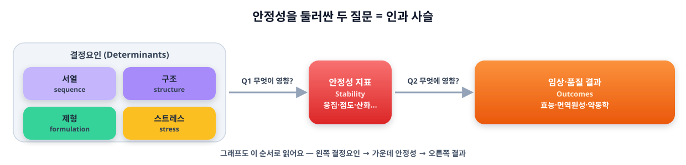
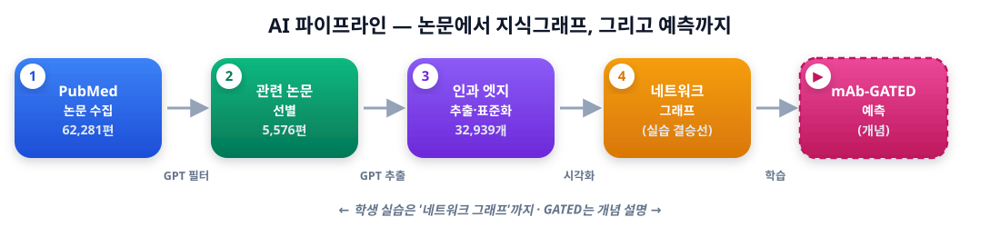
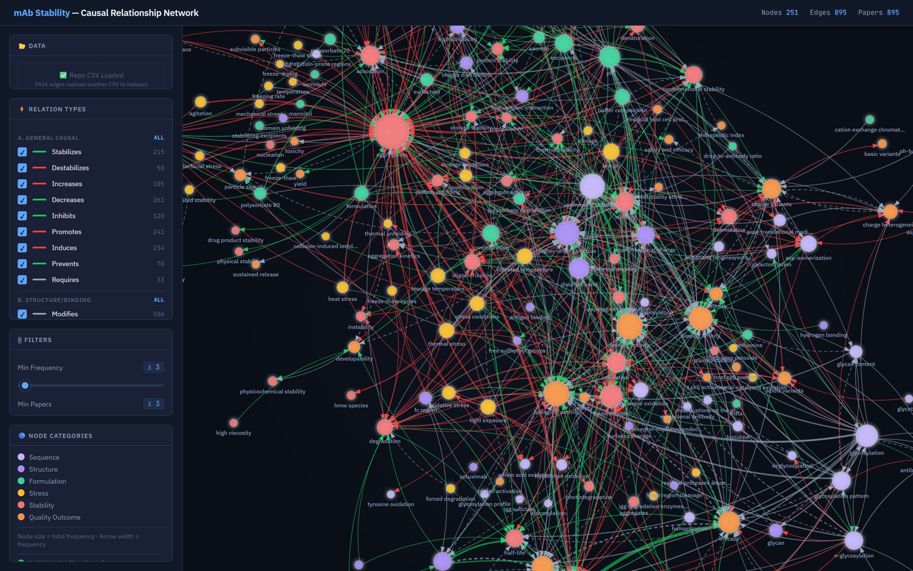
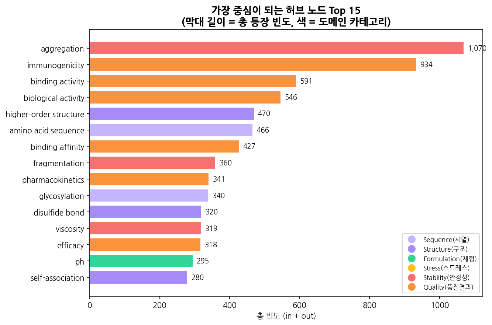
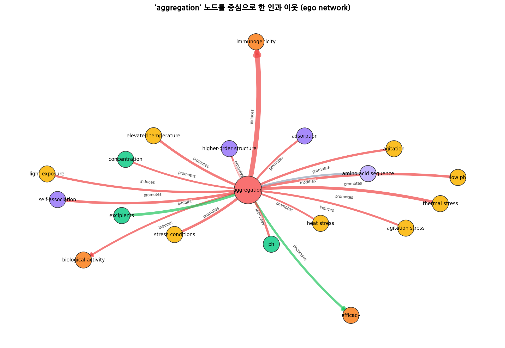
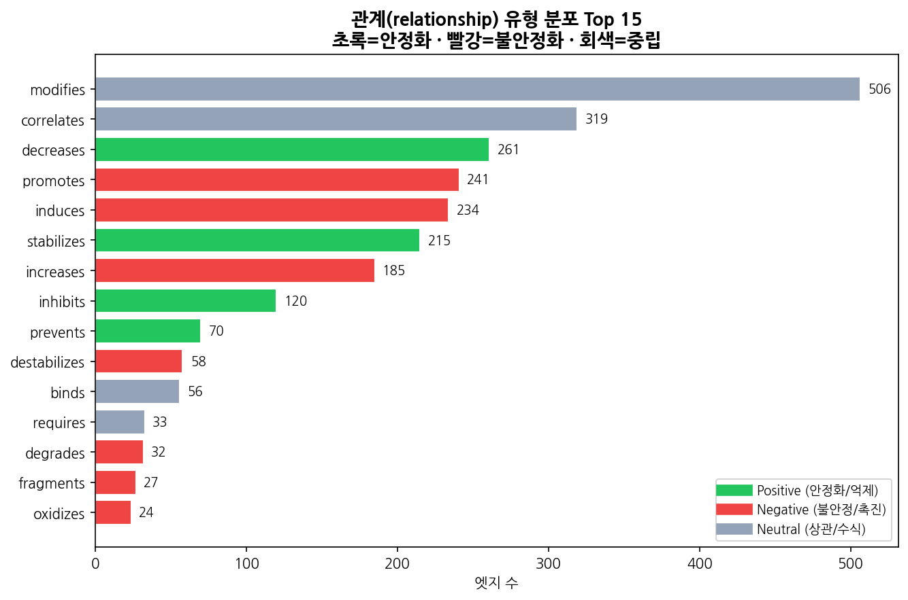
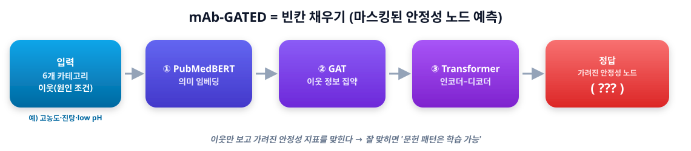

40년치 논문을 AI가 읽고, 안정성 지도를 그린다
항체 의약품(mAb)이 보관 중에 망가지는 문제를, 40년치 논문에서 AI가 인과관계를 뽑아 하나의 지도(그래프)로 잇는 프로젝트입니다.
배경 — IV(정맥주사)를 SC(피하주사)로 바꾸려면 약을 고농도로 만들어야 하고, 그러면 응집·점도 같은 불안정 문제가 커집니다. 그래서 두 가지 질문이 40년간 쌓였어요: ① 무엇이 안정성을 좌우하나? ② 안정성은 무엇을 좌우하나? 이 둘을 이으면 아래 사슬이 됩니다.

문제 — 개별 논문은 한두 고리만 따로 다뤄, 전체를 종합한 지도가 없었습니다. 목표 — ① AI로 관계 채굴 → ② 인과 지식그래프 → ③ mAb-GATED 로 "이 패턴이 학습 가능한가" 검증.

전체 흐름 한눈에 보기 — 숫자는 실제 연구 규모입니다.
이 그림책으로 따라 할 수 있는 것 — 아래 3가지
파이프라인을 한 단계씩, 코드가 무엇을 하는지까지 풀어봅니다. 각 단계는 CSV 파일을 다음 단계로 넘겨요.
PubMed(무료 논문 도서관)에 검색어를 던져 제목·초록을 받아옵니다. 검색어를 '서열→구조→제형·스트레스→안정성→품질→약동학' 인과사슬 갈래로 설계해 길목을 빠짐없이 훑어요.
입력: 없음 · 출력: step1_abstracts.csv · 원본 규모 62,281편
검색은 넓게 던지니 엉뚱한 논문도 딸려 옵니다. GPT가 문지기가 되어 한 편씩 "진짜 mAb 안정성 메커니즘 논문인가?"를 판단해 통과/탈락(+한 줄 근거)을 매겨요. 원본에선 약 9%만 통과.
입력: step1 CSV · 출력: step2_filtered.csv (relevant=1/0)
파이프라인의 핵심. GPT가 초록을 정독하며 (원인 → 관계 → 결과) 삼중항을 뽑고 → 같은 뜻 표현을 표준 용어로 통일(예: aggregate formation → aggregation) → 같은 관계가 몇 번 나왔는지 세어서 엣지 표를 만듭니다.
입력: step2 CSV · 출력: step3_edges.csv · 원본 32,939 엣지 (이게 그래프 재료 = 모델 교과서)
그 엣지 표로 예측 AI를 학습합니다. 그래프에서 안정성 노드를 가리고 이웃으로 맞히는 '빈칸 채우기' 모델 — 자세한 작동은 아래 모델 자세히에서.
입력: step3 CSV(또는 공개 엣지) · 출력: 학습된 모델 · GPU 필요
딱 이것만 있으면 됩니다.
koreanize-matplotlib가 자동 설치되어 깨지지 않습니다.Colab을 열면 왼쪽 끝에 열쇠 🔑 메뉴가 있어요. 여기에 키를 넣어두면 프로그램이 알아서 꺼내 씁니다. (코드에 직접 적지 않아 안전)
sk-…)를 붙여넣습니다.platform.openai.com → API keys버튼을 누르면 새 탭에서 Colab이 열립니다. 열리면 런타임 → 모두 실행 또는 셀을 위에서 아래로 ▶ 눌러 실행하세요.
연구팀 공개 데이터로 관계 분포·허브·네트워크·이웃(ego) 그래프 4종을 바로 그려봅니다.
🚀 Colab에서 “그래프 그리기” 열기PubMed에서 논문을 모아 GPT로 (원인→관계→결과)를 뽑고, 내 그래프를 만듭니다. 키가 없으면 공개 데이터로 자동 진행.
OPENAI_API_KEY가 있어야 합니다(없어도 그래프까지 완주). 비용은 논문 ~20편 기준 수십 원.위 '파이프라인 실습'이 한 노트북 요약본이라면, 이건 원본 연구의 4단계를 그대로 따라하는 버전입니다. 사설 DB 없이 CSV로 단계가 연결돼요.
| ① 수집 | step1_collect — PubMed 초록 수집 (키 불필요) |
| ② 필터 | step2_filter — GPT 관련성 선별 (키 필요) |
| ③ 추출 | step3_extract — 인과관계 추출·표준화·집계 (키 필요) |
| ④ 학습 | step4_gated — mAb-GATED 학습 (GPU 런타임 필요) |
딱 세 가지만 기억하세요.
서열 구조 제형 스트레스 안정성 품질결과
| ① 점 색 | 6개 카테고리. 왼쪽 결정요인(서열·구조·제형·스트레스) → 가운데 안정성 → 오른쪽 결과 로 사슬이 흐릅니다. |
| ② 점 크기 | 자주 등장할수록 큼 = 중요한 길목(허브). |
| ③ 화살표 색 | 🟢 초록=안정화/억제(좋음) · 🔴 빨강=불안정/촉진(나쁨) · ⚪ 회색=중립(상관/수식) |
🕸️ 실제 인터랙티브 그래프 (D3.js)

노드 962개 · 엣지 2,436개 — 클릭하면 마우스로 끌고 확대·필터링하는 진짜 그래프가 열립니다
아래는 같은 데이터를 다른 각도로 본 분석 그래프 (노트북으로 직접 만드는 결과)



파이프라인의 마지막. 그래프에서 배운 패턴으로 안정성을 예측하는 AI입니다. 어려워 보여도 하나씩 풀면 간단해요.
영어 빈칸 추론과 똑같습니다. 주변 단서(원인 조건)를 보고 가려진 답(안정성 지표)을 맞혀요.
잘 맞히면 → 새 항체·새 제형에서 어떤 위험이 클지 미리 예측. 즉 "문헌의 인과 패턴은 학습 가능하다"는 증거예요.

문제 하나(샘플) = 정답 노드 1개를 가리고, 그 이웃들을 보여줍니다.
| 이웃 구성 | 6개 카테고리 × 각 5개 = 최대 30개 이웃 노드 |
| 각 이웃이 담는 정보 | [어떤 노드 · 어느 카테고리 · 무슨 관계 · 직접(1칸)인가 간접(2칸)인가] |
| 빈도 가중 | 자주 보고된 관계일수록 더 자주 등장 → 중요한 단서에 무게를 더 줌 |
저장온도 → 분해산물 → 응집 처럼 한 다리 건넌 단서도 함께 봅니다. (그래프라서 가능한 강점)| ① PubMedBERT 임베딩 | 단어를 '의미 숫자'로. sucrose·trehalose가 비슷하다는 걸 미리 앎 — 의학 사전을 주고 시작해 빠르고 똑똑. |
| ② GAT (그래프 어텐션) | 그래프에서 이웃 정보를 모으되 중요한 이웃에 더 집중. (회의에서 핵심 발언자에게 더 귀 기울이기) |
| ③ Transformer 인코더 | 여러 원인을 서로 비교·종합해 하나의 '문맥'으로. (단서를 종합하는 탐정) |
| ④ 디코더 + 출력 | 그 문맥으로 정답 노드를 생성. 단, 같은 종류(물리/화학/생물) 후보 안에서만 고름(공정한 객관식). |
학습되는 숫자(파라미터)는 약 320만 개 — 요즘 AI 기준 작지만 충분히 똑똑합니다.
수천 문제(이웃 → 정답)를 풀게 하고, 틀리면 정답 쪽으로 내부 숫자를 아주 조금씩 조정(역전파). 수백 번 반복하면 점점 잘 맞혀요.
| 70 / 15 / 15 | 공부용 · 모의고사 · 실전. 실전(test)은 학습에 절대 안 씀(공정한 평가) |
| constrained 손실 | 물리/화학/생물 같은 종류 안에서만 채점 → 난이도를 공정하게 |
| early stopping | 모의고사 점수가 더 안 오르면 자동 정지(과적합 방지) |
| Hits@1 | 정답을 1등으로 맞힌 비율 (높을수록 좋음) |
| Hits@3 | 정답이 상위 3개 안에 든 비율 |
| MRR | 정답 순위의 역수 평균 (1등=1.0, 2등=0.5, 3등=0.33…) → 전체 순위 품질 |
비교 대상(베이스라인): 랜덤(찍기) · 빈도(많이 나온 답 찍기) · DistMult(단순 그래프 모델). 이들을 크게 앞서야 '진짜 학습했다'고 할 수 있어요.
| 랜덤 / 빈도 / DistMult | Hits@1 8.6% / 36.6% / 16.8% |
| mAb-GATED | Hits@1 84.6%(테스트) · MRR 0.88 · 화학 안정성 99% — 단순 기법을 압도 |
→ "문헌에 흩어진 40년치 인과 패턴은 실제로 학습 가능하다"가 입증됐습니다.
설치 셀이 koreanize-matplotlib를 자동으로 깔아 한글 폰트를 적용합니다. 맨 위 설치 셀을 먼저 실행했는지 확인하고, 그 다음 그래프 셀을 실행하세요.
네! “그래프 그리기”는 키가 전혀 필요 없고, “파이프라인 실습”도 키 입력창에서 그냥 Enter 하면 공개 데이터로 그래프까지 완주합니다.
🔑 보안 비밀의 이름이 정확히 OPENAI_API_KEY 인지, 노트북 액세스가 켜져 있는지, 키 앞뒤 공백이 없는지 확인하세요.
“파이프라인 실습” STEP 1의 검색어(QUERIES)를 바꿔보세요. 예: "monoclonal antibody" AND "oxidation". 그러면 그 주제의 그래프가 나옵니다.
인터랙티브 그래프의 왼쪽 Upload CSV에 노트북이 만든 step3_edges.csv를 올리면 됩니다. (필요 컬럼: cause, category_cause, effect, category_effect, relationship, frequency, num_papers)
이 버튼은 공개 GitHub 저장소의 노트북을 엽니다. 저장소가 공개(public)이고 경로가 맞으면 별도 권한 공유 없이 누구나 열립니다. (배포자: 저장소가 private면 public으로 바꾸세요)